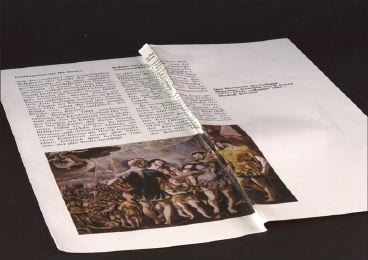
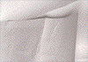
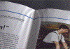
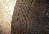
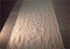
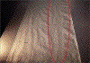

FALTENBILDUNG
|
Bei einer starken Deformierung des Papiers beim
Durchlauf durch die Druckmaschine, sei es als Bahn
oder im Format, kann eine Faltenbildung mit
vielfältigen Ausformungen auftreten (Abb. 1
und Abb. 2).
Dieser Effekt tritt vor allem beim
vollständigen Kontakt zwischen Druck- und
Gegendruckzylinder auf, also beim Offsetverfahren
und beim Tiefdruckverfahren.
Neben der das Druckerzeugnis unbrauchbar machenden
Faltenbildung werden in jedem Falle
verhältnismäßig starke
Passerdifferenzen auftreten (siehe dort). Beim
Rotationstiefdruck und im Rollenoffsetdruck kann
die Folge von Faltenbildung ein Abreißen der
Bahn beim Durchlauf durch die Druckmaschine
sein.
|

|
Abb. 1: Faltenbildung an einem bedruckten
Bogen.
|
|
|
|
Mögliche Ursachen:
|
|
|
|
Abb. 2: Faltenbildung in einem
Verkaufsprospekt.
|
|
|
|

|
|
Abb. 3: Faltenbildung an unbedruckten Bogen.
|
|
|
|

|
|
Abb. 4: Faltenbildung im Falzbereich.
|
|
|
|
|
|
Abb. 5: Perforation am Kopfende des Falzbogens
zur Vermeidung des Luftstaus zwischen den
Lagen.
|
|
|
|
|
|
Abb. 6: Vergrößerte Darstellung der
Perforation am Kopfende des Falzbogens.
|
|
|
|

|
|
Abb. 7: Beanstandete Rolle, die wegen
„Teleskopieren“ aussortiert werden
musste.
|
|
|
|

|
|
Abb. 8: Relativ plan ausgelegte Bahn einer als
„gut“ bezeichneten Rolle.
|
|
|
|

|
|
Abb. 9: Ausgelegte Bahn einer als
„schlecht“ bezeichneten Rolle mit starken
Unterschieden im Planlageverhalten über die
Breite.
|
|
|
|
|
Voraussetzung für den Durchlauf einer Bahn bzw. eines
Bogens durch die Druckzone ohne Deformierung ist die
absolute Planlage des Papiers. Selbstverständlich muss
sichergestellt sein, dass die Druckspannung über die
Breite von Druck- und Gegendruckzylinder
gleichmäßig ist. Wurde Formatpapier durch
Feuchtigkeitsaufnahme beim Transport oder bei der
Zwischenlagerung randwellig, so macht sich die Verformung in
einer mehr oder weniger starken Faltenbildung bemerkbar. Im
Extremfall bilden sich Falten, die von der Vorderkante oder
von der Mitte des Bogens zum hinteren Rand verlaufen. Ist
ein Papierstapel an seinen Kanten ausgetrocknet, so ergibt
sich eine Verkürzung der Bogenkanten gegenüber der
Bogenmitte, also eine Tellerbildung. Die Verformung der
Bogen in der Druckzone ergibt eine fächerförmige
Auswalkung der Hinterkante des Bogens. Bei starkem Tellern
bilden sich Falten in der Bogenmitte, die aber nicht bis zur
Hinterkante verlaufen.
Die Ursache für eine Faltenbildung beim Formatdruck
kann aber auch in einer ungünstigen Einstellung der
Bogenanlage zu suchen sein. Ein Stauchen der Bogen in der
Anlage wird zwangsläufig zu Passerdifferenzen und unter
Umständen zu Faltenbildung führen. Vor allem, wenn
eine Faltenbildung von der Anlagekante des Bogens an zur
Bogenmitte zeigt, ist auf ungünstige Einstellung der
Bogenanlage zu schließen.
Bei Feuchtigkeitseinwirkung auf nicht wasserdampfdicht
verpackte Papierrollen erfahren die Bahnkanten eine
Verlängerung gegenüber der Bahnmitte. Bei der
Beanspruchung in der Druckzone wird das Papier deformiert
und es bilden sich unter ungünstigen Bedingungen
Falten, die in Längsrichtung der Bahn verlaufen. Tritt
ein Feuchtigkeitsentzug an den Schnittkanten auf, so
schrumpfen die Bahnkanten gegenüber der Bahnmitte. Die
sich ergebende ungleichmäßige Zugverteilung
über die Bahnbreite kann ein Einreißen und
Abreißen der Bahn verursachen. Beim Rollendruck, sei
es im Tiefdruck oder Offsetverfahren, ist
selbstverständlich eine exakte Justierung der
Papierleitwalzen, der Zugelemente und der Druck- und
Gegendruckzylinder unbedingte Voraussetzung für einen
faltenfreien Durchlauf der Papierbahn. Breitstreckwalzen wie
sie in Papiermaschinen und nachgeschalteten
Ausrüstungsmaschinen bereits seit langem üblich
sind, werden nun verschiedentlich auch in Druckmaschinen zu
Vermeidung von Faltenbildung eingebaut.
Bei nicht korrekt gewickelten Rollen und/oder beim
Aufwickeln von Rollen mit zu hoher Feuchtigkeit tritt
Faltenbildung bereits bei der Papierherstellung auf.
Normalerweise werden schadhafte Produktionen durch mehrere
Fehlererkennungssysteme automatisch aussortiert, so dass
diese erst gar nicht ausgeliefert werden. In
Ausnahmefällen kann es aber vorkommen, dass Rollen mit
Faltenbildung ausgeliefert bzw. quergeschnitten werden. In
der Druckerei müssen dann die betroffenen Bogen bzw.
Rollen aussortiert werden (Abb. 3).
Faltenbildung kann aber auch beim Falzen von Papier in der
Rollenoffsetmaschine oder im externen Falzgerät
entstehen (Abb. 4). Die Gründe hierfür liegen
meist in nicht optimaler Maschineneinstellung. Bei dickeren
Falzlagen entsteht zwischen den Lagen ein Luftstau, der beim
Falzvorgang zu Verwirbelungen und somit zur Faltenbildung
führen kann.
Um diesem vorzubeugen, wird der Falzbogen am geschlossenen
Kopfende perforiert, um ein Entweichen der Luft zu
ermöglichen (Abb. 5 und Abb. 6).
|
Mögliche Abhilfen:
|
|
Wie aus den Ausführungen über die Ursachen der
Faltenbildung hervorgeht, ist in erster Linie auf eine gute
Planlage des Papiers zu achten. Voraussetzung dafür
ist, dass beim Transport und bei der Zwischenlagerung des
Papiers keine ungünstigen Klimaeinflüsse,
Feuchtigkeitsaufnahme oder Feuchtigkeitsabgabe an den Bogen
bzw. Schnittkanten auftreten können. Nur in
Ausnahmefällen ist es wirtschaftlich vertretbar und
technisch überhaupt möglich, die Planlage von
Papier durch Aushängen oder durch einen Streckgang zu
verbessern. Bei randwelligem Formatpapier kann eine
Faltenbildung beim Offsetdruck durch Reduzierung der
Druckspannung an den Bogenkanten (Verminderung der
Aufzugsstärke) kompensiert werden. Dieses sind jedoch
empirische Hilfsmaßnahmen, die nur in Notfällen
angewandt werden. Maschinentechnisch bedingte Faltenbildung
lässt sich durch eine sorgfältige Beobachtung des
Laufs der Bogen auf dem Anlegetisch, Vermeidung der
Stauchung in der Anlagemarke und in den
Übergabegreifern und entsprechende Justierung der
einzelnen Maschinenelemente beseitigen. Um Falzfalten zu
vermeiden, ist auf optimale Maschineneinstellung und
korrekte Ausführung der Perforation zu achten.
|
Beispiel(e):
|
|
Faltenbildung beim Aufwickeln von Rollen im
Endlosdruck:
Ein Großanteil der Endlosformular-Produktionen wird
von Rolle auf Rolle gefertigt. Der Druck erfolgt teilweise
ein- oder zweiseitig und das mit einer oder mehreren Farben.
Die bedruckten Rollen werden dann häufig an
Rechenzentren ausgeliefert, in denen die Vordrucke im
Laserdrucke personalisiert und anschließend zu
einzelnen Formularen geschnitten werden. Diese gelangen
letztendlich zum Kunden.
Alle Verfahrensschritte müssen fehlerfrei sein, damit
keine Störungen bei der Personalisierung der
angelieferten Rollen auftreten. Beschriftungsfehler haben
unangenehme Reklamationen zur Folge. Der Endlosdrucker ist
daher angehalten, nur die Rollen auszuliefern, die ein
einwandfreies Druckergebnis aufweisen und auch keine
Probleme bei der Beschriftung bereiten. Im vorliegenden Fall
wurden für den Auftrag eines Großkunden 500
Endlosrollen geliefert. Es handelte sich um einen
Vorderseitendruck mit Rot und Grau und einen
Rückseitendruck mit Grau.
Aus der Lieferung zeigten von 500 Rollen einige Rollen einen
Effekt, den man in der Praxis in dieser Form nur selten
beobachtet. Nach dem Aufwickeln der beanstandeten Rollen
wurde an den Stirnseiten ein „Teleskopieren“
festgestellt (Abb. 7).
Dies machte sich in einem mäanderförmigen
Versetzen von einzelnen Bahnen bis zu 5 mm bemerkbar. Nach
Beobachtung dieses Fehlers wurden vom Drucker insgesamt ca.
25 Rollen aussortiert, die nachgedruckt werden mussten. Da
in der Druckerei während der gesamten Produktion keine
Veränderungen an den Druckbedingungen vorgenommen
wurden, war der Verdacht nahe, dass innerhalb der
angelieferten Rollen papierbedingte Unterschiede im
Laufverhalten bestehen.
Es sollte nun von der FOGRA geklärt werden, ob
fehlerhafte Rollen als Ursache für diesen Fehler in
Frage kommen.
Beurteilung der Rollen:
Die Rollen wurden mit einem Skalpell aufgeschnitten und die
Bahn an den Übergängen des
mäanderförmigen Versetzens beurteilt. Hier zeigte
sich jeweils eine schräg verlaufende Faltenbildung, die
sich bis zum erneuten Ausrichten der Bahn kurzzeitig
zurückbildete. Diese Beobachtung machte deutlich, dass
eine über die Bahnbreite unterschiedliche Bahnspannung
die Faltenbildung verursachte bzw. ein Versetzen der Bahn
bewirkte.
Diese Phasen traten bei den beanstandeten Rollen in
unterschiedlicher Häufigkeit auf.
Papieruntersuchungen:
Feuchtigkeitsmessungen an rechter und linker Seite zeigten
an den beanstandeten gegenüber den als „gut”
bezeichneten Rollen zwar gewisse Abweichungen, die man aber
als „nicht gravierend” bezeichnen konnte.
Bahnen von guten und schlechten Rollen wurden auf einer
planen Unterlage ausgelegt. Nach dem Befestigen an der
Positionsplatte des FOGRA-Prüfset erfolgte mit der
Ausstreichhilfe des Kontrollsystems die Ausrichtung der
Papierbahnen.
Unter Schräglicht wurden von den einzelnen Bahnen
fotografische Aufnahmen erstellt. In Abb. 8 ist die Bahn der
als „gut” bezeichneten Rolle dokumentiert. Es
zeigt sich zwar eine gewisse Beuligkeit, die partielle
Ungleichmäßigkeit ist jedoch über die
gesamte Bahnbreite gleich. Demgegenüber ist bei der
beanstandeten Bahn über die Bahnbreite ein starker
Unterschied in der Planlage festzustellen. Im
äußeren rechten Randbereich ist eine starke
Wellenbildung neben einer Zone mit wellenfreier, gespannter
Oberfläche sichtbar (Abb. 9).
Diese Beobachtungen bestätigten sich in gleicher Weise
bei mehreren beanstandeten Rollen.
Damit wurde deutlich, dass die Ursache des beanstandeten
Laufverhaltens in schlechtem Querprofil des Papiers zu
suchen war. Ob es sich hierbei um Dickenschwankungen bzw. um
sog. Wassersäcke handelte, wurde bei dieser
Untersuchung aus Kostengründen nicht ermittelt. Diese
Detailuntersuchungen müssen vom Papierhersteller selbst
zur künftigen Vermeidung des Fehlers vorgenommen
werden. Ihm stehen hier zur genauen Klärung
Aufzeichnungen der Produktionsdaten zur Verfügung.
|
Allgemeine Hinweise:
|
|
Für den Reklamationsfall:
Druckausfallmuster sicherstellen.
Verpackung von Stapel oder Rollen prüfen.
Ausgangsfeuchte des Papiers messen.
Raumfeuchte messen.
Produktionsdaten protokollieren.
Ergänzende Literatur:
WEISSENBORN, M.:
Der Ausdruck bestimmt den Eindruck. Das wundersame Medium
Papier (Teil 6).
In: Print & Production, Mag. Jg. 10, Nr. 9, (1997), S.
10 - 11
FALTER, K.-A.:
Klima, Papier und Druck.
München: FOGRA, Sept. 1998, Praxis Report Nr. 50
LINDQVIST, U.:
Studies on Runnability Problems.
In: Paperi Ja Puu, (1983), Nr. 4, S. 305 (5 S.),
(englisch)
|
|
|
|
|
|
|
Kontakt:
zins@fogra.org
|
Fal-zin-200112
|